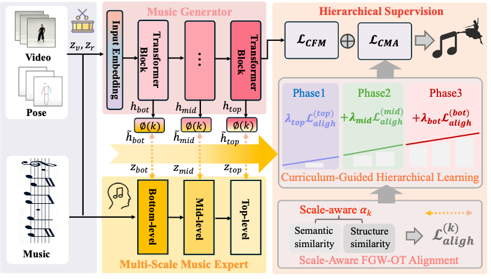

Abstract
Dance-to-Music (D2M) generation aims to synthesize music that aligns rhythmically and stylistically with dance videos. Existing methods typically rely on sparse dance cues (e.g., rhythm and style) and supervise only the final audio output, which leads to a semantic gap and limits the learning of expressive musical representations. To address these challenges, we propose CMA-OT (Curriculum-guided Multi-scale representation learning with scale-aware Optimal Transport), a framework that leverages a pre-trained music expert to provide hierarchical supervision across multiple semantic levels. CMA-OT includes: Curriculum-guided multi-scale learning, which progressively transfers musical knowledge from coarse to fine levels for effective representation guidance. Scale-aware Fused Gromov-Wasserstein Optimal Transport (FGW-OT), which models soft correspondences between hierarchical expert representations and latent generator features. Extensive experiments on benchmark datasets show that CMA-OT achieves state-of-the-art performance in rhythmic synchronization, perceptual quality, and overall music generation.
Method Pipeline
明白了！在 GitHub demo page 上，你可以用 **emoji** 或 **SVG 图标**来增强视觉效果。这里我给你一个示例，把你 pipeline 的三个模块前面加上图标：
---
### **CMA-OT Method Pipeline**
** Hierarchical Expert Supervision**
Leverages a pre-trained multi-scale music expert to provide **coarse-to-fine guidance** at macro (global style), meso (melody/harmony), and micro (rhythm/timbre) levels.
*Innovation:* Bridges the semantic gap beyond sparse dance cues.
**
Hierarchical Expert Supervision**
Leverages a pre-trained multi-scale music expert to provide **coarse-to-fine guidance** at macro (global style), meso (melody/harmony), and micro (rhythm/timbre) levels.
*Innovation:* Bridges the semantic gap beyond sparse dance cues.
** Curriculum-Guided Multi-Scale Learning**
Transfers knowledge progressively from coarse to fine representations, enabling stable hierarchical learning.
*Innovation:* Gradual learning improves fine-grained temporal modeling.
**
Curriculum-Guided Multi-Scale Learning**
Transfers knowledge progressively from coarse to fine representations, enabling stable hierarchical learning.
*Innovation:* Gradual learning improves fine-grained temporal modeling.
** Scale-Aware Alignment with FGW-OT**
Aligns dance and music features across scales using **Fused Gromov-Wasserstein Optimal Transport**, preserving temporal coherence while allowing flexible soft alignment.
*Innovation:* Soft, scale-aware alignment outperforms rigid global matching.
Scale-Aware Alignment with FGW-OT**
Aligns dance and music features across scales using **Fused Gromov-Wasserstein Optimal Transport**, preserving temporal coherence while allowing flexible soft alignment.
*Innovation:* Soft, scale-aware alignment outperforms rigid global matching.

Generation Results
Example results of dance-to-music generation for multiple methods. Each row displays 6 results for easy comparison.
Input Dance
CMA-OT Output
Method A Output
Method B Output
Method C Output
Audio Preview
* Repeat the above grid blocks for additional samples for full comparison *